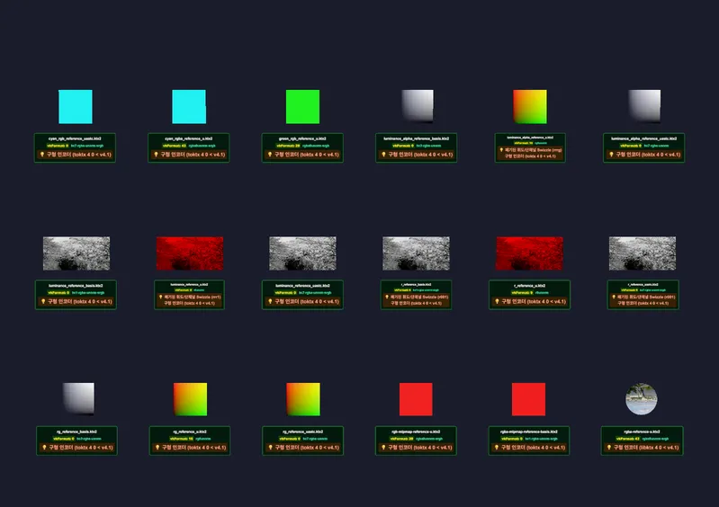

3D Material & Texture KTX2 Texture
Legacy (1st Gen Reference) - RedGPU WebGPU Example
Tests automatic metadata detection and rendering of legacy KTX2 assets.
Khronos 1세대 레퍼런스 KTX2 텍스처 판별 및 렌더링을 테스트합니다.

3D Material & Texture KTX2 Texture
Tests automatic metadata detection and rendering of legacy KTX2 assets.
Khronos 1세대 레퍼런스 KTX2 텍스처 판별 및 렌더링을 테스트합니다.
